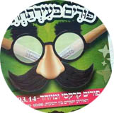
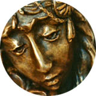
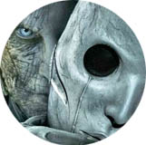
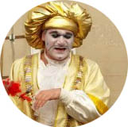

ПУРИМ - еврейский праздник 2017 | ВСЕ СТАТЬИ
ВСЕ СТАТЬИ к еврейскому празднику ПУРИМ 2017 /
ПУРИМ. Свиток Эстер художника Илияhу Сиди
Перелистывая мегилат Эстер (синод. – кн. Есфирь) художника Элиягу Сиди, вы скоро заметите два плана: в первом - текст древнего сказания о Пуриме... Этот план переплетается с другим - красочно-юмористическим показом нацистского окончательного решения еврейского вопроса.
 ПУРИМ. Празднование в г.Хайфа (нижний город)
ПУРИМ. Празднование в г.Хайфа (нижний город)
Особенная атмосфера праздника в Ир а-тахтит /нижнем городе/ в Хайфе. Хайфа празднует ПУРИМ! Радость, добрые улыбки.
.

Пурим - срывание масокИнтересно, что весь этот праздник и книгу Эстер в целом можно назвать книгой переодеваний. Мы видели эти маски уже в именах главных героев Мордехая и Эстер, еврейское имя которой – Адасса. И далее мы видим целую череду переодеваний.

ПУРИМ | Эстер — образ СпасителяБиблия представляет нам героев веры, в которых можно видеть прообраз Мессии, Избавителя в т.ч., в лице еврейской женщины по имени Адаса (она же царица Эстер). Мне довелось создать этот образ в бронзе. Об этом мои размышления.
Пурим — праздник НЕПРАВИЛЬНЫХ ЕВРЕЕВ
У меня ДВОЯКОЕ ОЩУЩЕНИЕ, когда я думаю о некоторых традициях праздника Пурим. К примеру, традиция пуримского маскарада. Ведь что такое маска? — стремление выдать себя за того, кем в действительности не являешься.
Уши Амана | УМЕНТАШ — рецепт пирожков с маком
На Пурим едят особые печенья. Ашкеназские евреи пекут треугольные пирожки с маком. Рецепт озней аман (ущи амана - ументаш) вы найдете здесь (+ видео).
Мишлоах манот | Вкусные покупки с горы Фавор
Мишлоах манот - традиция посылать сладости со своего стола близким, знакомым, просто прохожим в преддверии праздника Пурим. В этом видео моя супруга делится посещением особенного магазина миндаля у подножья горы Табор (Фавор).
Пурим. Священное смехотворство
«Пурим-шпил» (с идиш: ПУРИМское представление) — юмористические и сатирические пьесы, которые традиционно разыгрываются в еврейских общинах в праздник «Пурим». Сергей Комягин: «Само по себе смехотворство, юмор – это очень серьезное оружие».

Пурим | Обличить злоНасколько приемлемо для верующего человека – изображать со сцены зло? Об этом рассуждают актеры театра "Екклизиаст" Сергей Комягин и Сергей Лукьянов.

Хайфа празднует ПУРИМОсобенная атмосфера праздника в Ир а-тахтит /нижнем городе/ в Хайфе. Хайфа празднует ПУРИМ! Радость, добрые улыбки. + фото галерея
МОЖЕТ ли женщина трубить В ШОФАР?
Библия представляет нам героев веры, в которых можно видеть прообраз Мессии, Избавителя в т.ч. в лице еврейской женщины по имени Адаса (она же царица Эстер). Через нее Всевышний являет Свое спасение еврейскому народу. В этой статье - размышление о том, на что таки способна женщина? Может она например трубить в шофар? Разрешается ли это?
Актер фильма «УШПИЗИН» — о своих поисках веры
Некогда очень известный светский артист, сейчас, когда он вернулся к вере (ныне бреславский хасид), он один из самых популярных музыкантов (автор и исполнитель), чьи песни поднимаются на самые высокие места в израильских хит-парадах
 и СМЕХ, и НЕ ГРЕХ | Сергей Лукьянов
и СМЕХ, и НЕ ГРЕХ | Сергей Лукьянов
"Мои рассказы — духовные, сатирические, душевные, но точно не плотские". Актер и священнослужитель Сергей Лукьянов читает свои рассказы - самый подходящее заниятие для пуримского веселья.